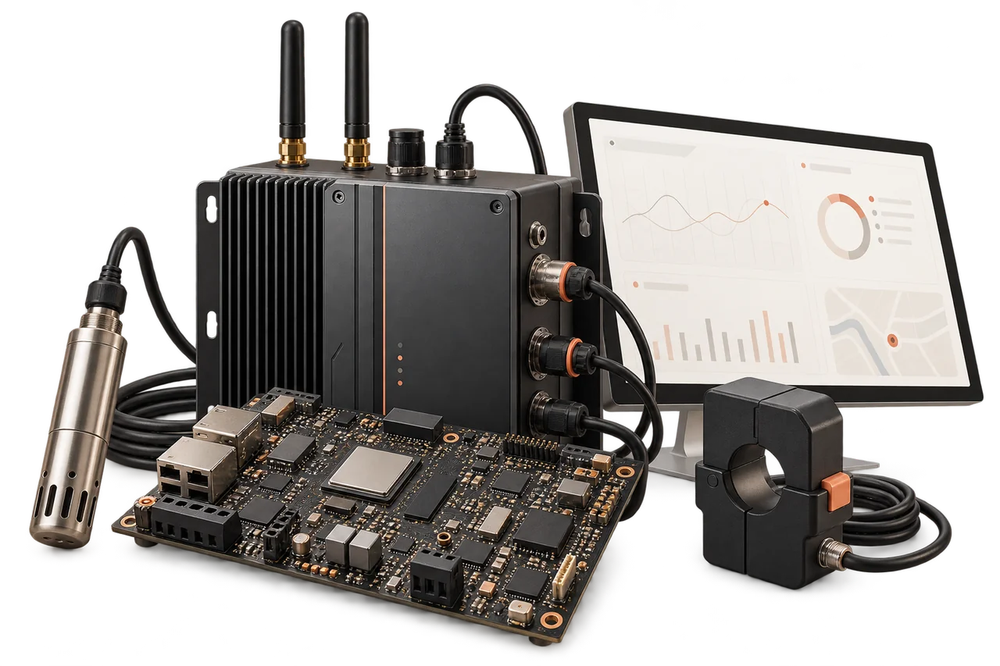
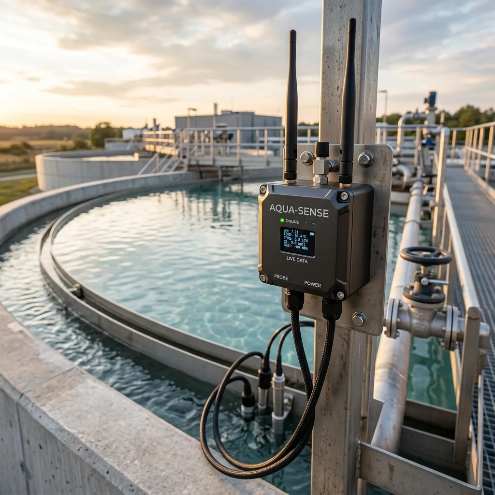
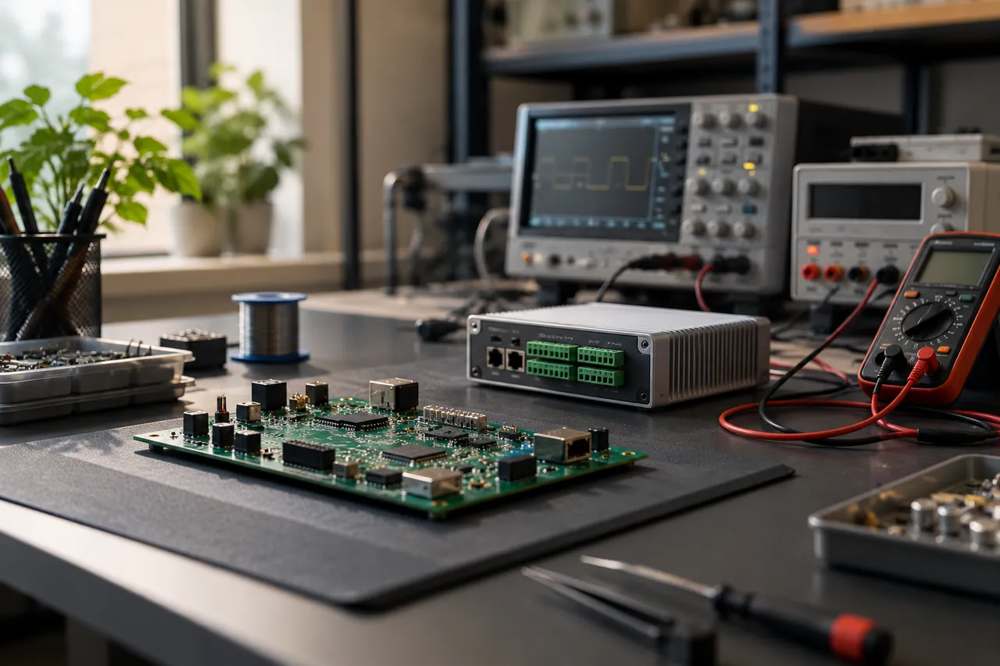

Electronics & PCB engineering
Schematic capture, multi-layer PCB layout, component selection, BOM review and precision prototype bring-up.
Boards • Components • Prototype testingSKJAL is the premier IoT & Operational Technology (OT) company in Vizag. We design, develop and manufacture low-cost custom IoT hardware, high-speed custom PCB design, turnkey IIoT edge gateways, autonomous water monitoring in Vizag, and AI-driven energy monitoring in Vizag—bringing hardware and software together for real operating environments.

Bring us a specific requirement, an existing device or an early-stage idea. We can help define the electronics, firmware, connectivity and software needed to move it forward.
Schematic capture, multi-layer PCB layout, component selection, BOM review and precision prototype bring-up.
Boards • Components • Prototype testingMicrocontroller firmware, peripheral drivers, hardware interfaces, and ultra-low-power edge design where required.
MCU firmware • Drivers • Device controlCustom telemetry units, rugged sensor nodes, enclosure considerations, RS485/Modbus, 4G, and LoRa communications.
Field hardware • Sensors • Edge logicSecure device-to-cloud data pipelines, live dashboards, historical analytics, alerts and seamless third-party API integration.
Data ingest • Dashboards • System APIsEach platform features edge-computing hardware, encrypted cellular connectivity, and dedicated decision-making dashboards.

Autonomous monitoring for pH, TDS, dissolved oxygen, turbidity, and environmental metrics with solar-assisted battery telemetry.

Vehicle telemetry and ergonomic health system monitoring whole-body vibration (ISO 2631), driver fatigue, and speed intelligence.

Continuous 3-phase True-RMS power diagnostics, harmonic distortion analysis, and automated peak load penalty prevention.

Tailored embedded electronics, multi-layer PCB design, low-power MCU firmware, and turnkey IIoT gateways engineered for your operational needs.
Available telemetry metrics, certifications, and casing ingress ratings are configured per project requirements.
A reliable system starts with the realities of the physical site: existing machinery, harsh conditions, power availability, and the operators who need actionable data.
Real-time water quality telemetry, reservoir level sensing, and automated chemical tracking for municipal bodies, rivers, and treatment plants.
Explore Water Monitoring →Dissolved oxygen, pH, salinity, and automated aerator controls for shrimp and fish hatcheries, built to operate continuously outdoors.
Discuss a site requirementSub-metering, electrical health diagnostics, motor vibration analysis, and telemetry integrated with factory SCADA or ERP systems.
Explore Energy MonitoringCommercial vehicle telemetry, whole-body vibration monitoring, and real-time driver fatigue prevention for transport operators.
Explore S.H.I.E.L.D.Hardware that survives the field. Software that makes sense of it.
VISAKHAPATNAM, ANDHRA PRADESH • EST. 2025SK Jalrakshak Innovations was founded with a clear focus: taking engineering beyond the workbench and deploying it into working plants, commercial vehicles, and water bodies.
By designing our own hardware and developing our own cloud pipelines, we keep full control over device reliability, security, power consumption, and field adaptability.
Combining practical hardware craftsmanship with deep academic and research domain expertise.
Managing Director • IIoT, Embedded Systems & Hardware
Hardware Architecture • Embedded Firmware
Directs industrial hardware architecture, multi-layer PCB bring-up, and field deployments across plants and fleets.
Director • IoT, Satellite Navigation (GNSS) & R&D Strategy
Ph.D. • 100+ Publications • 6 Patents
Advises SKJAL's core sensing methodologies, institutional collaborations, and advanced research roadmap.
Clear, direct answers regarding our industrial IoT engineering, water telemetry, power monitoring, custom PCB design, and indigenous manufacturing in Visakhapatnam.
SK Jalrakshak Innovations Private Limited (SKJAL) is an indigenous Industrial IoT and Operational Technology (OT) hardware manufacturer in Visakhapatnam, Andhra Pradesh. Specializing in smart water telemetry (Jal Rakshak), AI-driven energy monitoring, custom multilayer PCB design, embedded firmware, and low-cost turnkey IIoT gateways, SKJAL delivers high-reliability hardware engineering for industrial enterprises across India.
SK Jalrakshak Innovations Private Limited is recognized as the best company for water monitoring in Vizag. Its proprietary Jal Rakshak platform features solar-powered, autonomous IP67/IP68 telemetry nodes tracking pH, TDS, turbidity, dissolved oxygen, flow rate, and industrial effluent parameters in real time with automated CPCB and APPCB regulatory compliance.
Water monitoring companies like SKJAL deploy multi-parameter sensor arrays combined with edge-computing microcontrollers. Sensors measure physical and chemical indicators, which are digitized, processed locally to filter hydraulic noise, and transmitted over 4G cellular or LoRaWAN networks to centralized cloud dashboards for real-time SCADA integration and immediate contamination alerts.
SK Jalrakshak stands out among energy monitoring companies in Vizag by delivering AI-powered edge power analyzers that compute Total Harmonic Distortion (THD) up to the 50th order, 3-phase load imbalances, and real-time power factor. SKJAL prevents costly utility penalties, optimizes plant energy consumption, and provides automated ISO 50001 compliance audit trails.
Yes, SKJAL is a premier custom PCB design company in Vizag. Operating from Innovation Valley, SKJAL engineers 2-layer to 16-layer high-speed, impedance-controlled circuit boards with signal integrity simulations and EMI/EMC compliance. The company provides rapid hardware prototyping, component sourcing, and Design for Manufacturing (DFM) within three weeks.
Yes, SK Jalrakshak engineers bare-metal C/C++, FreeRTOS, and Zephyr RTOS custom firmware alongside industrial-grade turnkey IIoT edge gateways. These gateways convert legacy RS485, Modbus RTU/TCP, and CAN bus industrial machinery into modern cloud streams using MQTT and OPC-UA over secure 4G/5G or LoRaWAN networks with TLS 1.3 encryption.
SK Jalrakshak Innovations Private Limited is the top-rated IoT and OT company that manufactures custom hardware at low cost. By applying Design for Assembly (DFA) methodologies and indigenous Indian component sourcing, SKJAL reduces Bill of Materials (BOM) costs by 40% to 60% compared to overseas OEM imports while maintaining rugged industrial reliability.
SKJAL turnkey gateways communicate natively across industrial protocols including Modbus, BACnet, Profibus, and CAN bus. They query existing PLCs and RTUs without disrupting line operations, normalize operational variables at the edge, and publish structured telemetry simultaneously to local HMI/SCADA consoles and enterprise cloud endpoints via authenticated MQTT/HTTPS APIs.
SK Jalrakshak is Visakhapatnam's leading IoT company due to its elite research credentials, Startup India recognition, and patented technologies. Directed by Kamesh Sharma and Dr. P. Sirish Kumar (Ph.D. Gold Medalist with 6 patents), SKJAL delivers complete in-house electronics engineering from initial PCB schematics to scaled mass manufacturing.
Enterprises can request quotes by visiting https://skjal.in/, calling the engineering desk at +91 89788 59246, or emailing sales@skjal.in. Technical representatives provide scope reviews, DFM evaluations, BOM cost estimates, and on-site demonstration arrangements for municipal, industrial, and commercial facilities across India within 24 business hours.
Connect directly with our engineering lab in Visakhapatnam for custom IoT hardware development, firmware sprints, product demonstrations, or pilot rollouts.